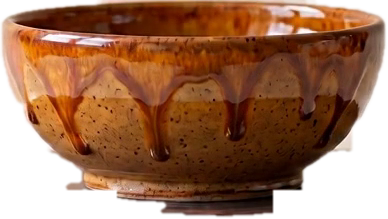

Every Kosava piece starts as a single ball of clay. We press, pinch, and coil it by hand — no moulds, no shortcuts — giving the clay its first memory of form.
On the spinning wheel, the rough form is coaxed into balance. Wet hands and steady pressure draw the walls upward into a clean, symmetrical vessel.
Once leather-hard, the bowl returns to the wheel. A sharpened blade peels away ribbons of excess until only the essential silhouette — and a delicate foot ring — remains.
Fired to 1,260°C and finished in our signature amber-orange glaze, the clay becomes permanent — polished, durable, and unlike any other piece in the world.
The bowl you just watched being made is the bowl we sell — and the bowl we'll teach you to make yourself. Take one home, or take the seat at the wheel.
